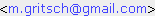

| |
|
Software zur Leistungserfassung/Zeiterfassung
© 2005–2018 Dipl.-Ing. Dr.techn. Markus Gritsch 
Download ::  Features :: Features ::  Screenshots Screenshots
|
deutsch :: english  |
ActivityRecording ist ein Programm zur einfachen und komfortablen Erfassung von Leistungen
und Notizen aller Art. Die Volltextsuche ist besonders leistungsfähig und schnell. Gesetzte
Alarme dienen zur Erinnerung an wichtige Termine. Abrechnungen können auf
vielfältige Weise durchgeführt werden. Das Programm ist hervorragend für alle
leistungsorientierten Berufsgruppen geeignet: Anwälte, Notare, Steuerberater,
Wirtschaftsberater, Bilanzbuchhalter, Treuhänder, ...
Überzeugen Sie sich selbst, und laden ActivityRecording gleich herunter.
ActivityRecording kann 50 Tage lang uneingeschränkt und in vollem Funktionsumfang
benutzt werden. Nach Ablauf dieser Zeitspanne ist der Erwerb eines Registrierungsschlüssels
für jeden Rechner auf dem das Programm installiert wird notwendig. Der Preis für einen
Registrierungsschlüssel zur kommerziellen Nutzung beträgt 290 Euro. Beim Kauf von
mehr als einem Registrierungsschlüssel kann ein Mengenrabatt eingeräumt werden. Es
fallen keine laufenden Lizenzkosten an. Updates eines bereits registrierten Programms auf
neuere Versionen sind kostenlos.
Anregungen zur Verbesserung des Programms, oder zur Anpassung an individuelle
Bedürfnisse werden gerne entgegengenommen, und nach Möglichkeit umgesetzt.
|
| Features |
|
Für alle Windows Versionen geeignet (9x/NT/Me/2000/XP/Vista/7)
Integrierte Programmdokumentation
Automatische Erfassung von Beginn- und Endzeit einer Leistung durch Punch-In/Stop
Belegbare Funktionstasten für häufig benötigte Akten
Barcode Scanner Unterstützung zur schnellen und bequemen Aktenauswahl
Übersichtliche Darstellung und schnelles Auffinden von Leistungen mittels integriertem Kalender
Selektives Darstellen erbrachter Leistungen eines frei wählbaren Zeitraums
Leistungsfähige Volltext-Suchfunktion über alle erbrachten Leistungen
Filter Felder zum raschen Einschränken der dargestellten Einträge
Farbliches Markieren bestimmter Leistungen und Akten
Anhängen von Dateien und Internet-Links zu Leistungen
Mitschneiden von Telefongesprächen* oder sonstigen Tonaufnahmen
Automatisches Wählen von Telefonnummern mittels Tonwahl (bei analogem Telefonanschluss)
Automatisches Backup der Datenbank und der angehängten Dateien
Möglichkeit der Textauszeichnung um bestimmte Bereiche hervorzuheben oder vom Ausdruck auszunehmen
Einfügen von konfigurierbaren Textbausteinen zur raschen Erstellung der Leistungsbeschreibung
Setzen von Alarmen mit automatischer Erinnerungsfunktion
Ausdruck mit Druckvorschau
Ausdruck eines Tagesjournals, des gesamten Aktes, oder Leistungen eines bestimmten Zeitraums
Honorarberechnung wahlweise nach Stundensatz oder nach Einzelleistung
Aufrundung auf einstellbare Intervalle für die Honorarberechnung
Mehrbenutzer- und netzwerkfähig
*Bitte beachten Sie die geltenden gesetzlichen Bestimmungen in Ihrem Land.
|
| Download :: Features :: Screenshots
|
Impressum: Dr. Markus Gritsch, Buntweg 7a, A-6511 Zams, Österreich. Telefon: +43(0)5442/90958, E-Mail: siehe oben
|
|
|
|
{kind=link}